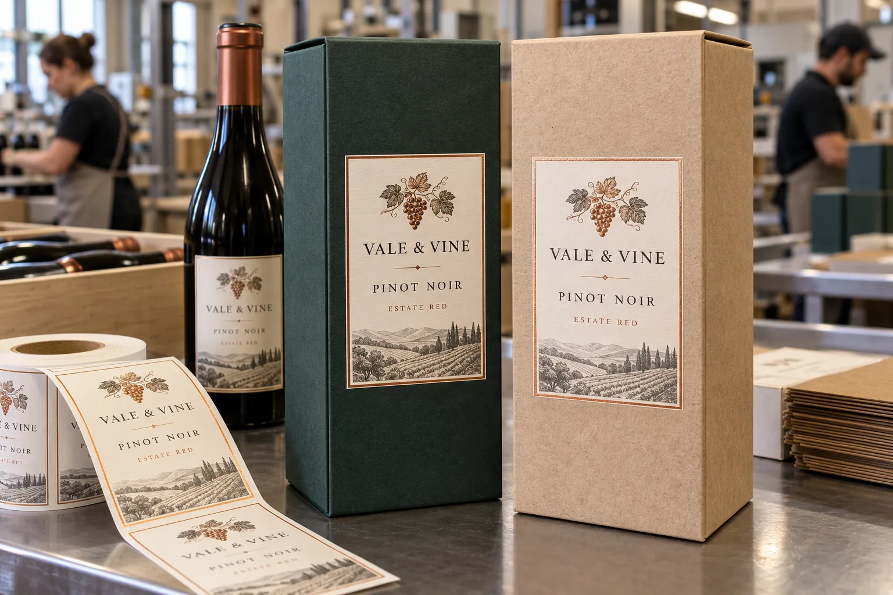

The box has a different surface from the bottle
A winery sometimes asks me to reuse its bottle artwork on a gift carton. The family resemblance is useful, but the construction should not be copied blindly. Glass is smooth and rigid; a paperboard box may have a matte coating, embossed texture or exposed fibers. Those details change how much adhesive actually contacts the surface.
HERMA's carton-label discussion notes that rough recycled board can lift label edges and may need a construction matched to that surface. UPM's paper-label overview shows the available range of smooth and textured faces. Neither source tells us that a specific face or adhesive will work on a particular wine box without a trial.
Two boxes, one visual identity
Imagine a composite winery offering a matte coated green box for its red wine and a natural paperboard box for a seasonal gift. The same illustration, grape mark and type can connect the two. I would still sample the label on both box surfaces. A stock that looks excellent on the matte board may leave obvious raised corners on the rougher board.
If the box will be assembled and packed by hand, align the label to a repeatable panel edge rather than relying on a worker's eye. If a fulfillment partner applies it, ask for its jig, direction and acceptable skew. The premium effect is easily lost when five boxes on a shelf show five different label heights.
Keep decoration away from the opening path
Start with a flat front panel and preserve clearance from folds, lid seams and finger notches. A label that crosses the opening can become a seal; that is a different job and should be specified deliberately. For a decorative front label, test rubbing during boxing, stacking and shipment. A high-gloss foil detail can be attractive, but it is not a substitute for adhesion and placement accuracy.
| Approval item | Evidence to collect |
|---|---|
| Board | Coating, texture and real box sample |
| Panel | Flat area and fold clearance |
| Finish | Print, foil or embossing proof at size |
| Application | Jig, speed and skew tolerance |
| Handling | Scuff and corner lift after packing |
Our buying view
Make the gift feel intentional, not merely expensive
I would choose a modest label that sits perfectly on both finished boxes over a larger embellished label that lifts at one corner. Consistency is part of the premium experience, and it starts with the actual board sample.
What to send with the request
- Finished boxes from each paperboard and coating supplier.
- Flat panel dimensions, fold map and opening direction.
- Artwork for every wine and gift variant.
- Assembly method, quantity and shipping route.
Compare embossing and foil for wine labels for finish decisions, and labels on paperboard cartons for rough-surface testing.
Frequently asked questions
Can the bottle label stock be used on the box?
Possibly, but glass and coated or textured board present different surfaces. Approve the box label on the finished carton.
Should a label cross a gift box fold?
A flat front panel is the safer starting point. A fold or lid seam requires a separate fit and opening trial.
Is hot foil necessary for a premium look?
No. Paper texture, restrained ink and accurate placement may carry the presentation; compare finish cost and scuff behavior on real packed boxes.
Related buyer guides
Review your label specification
Send package photos, label dimensions, material details, quantity and application conditions. Include good and failed samples where possible so the discussion starts with evidence.
Continue with Bag-in-Box Wine Labels: Leave Room for the Tap and Folds for a focused purchase checklist.